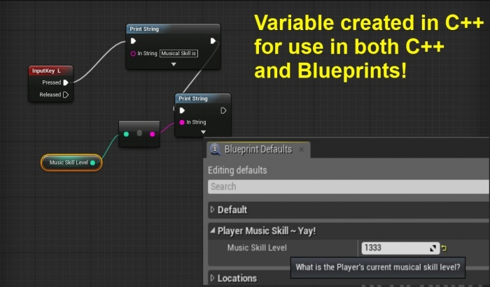

Blueprints, Creating Variables in C++ For Use In BP
Contents
Overview
Original Author: ( )
Dear Community,
Here is how you create a property in a c++ base class,
so that it can be accessed in the blueprinted version of your base class that you see in the Editor!
Example: PlayerMusicSkillLevel
Let's say you have a blueprinted player controller class,
and you want to add a variable: PlayerMusicSkillLevel
This is a variable that other project members want to be able to read and write to from blueprints!

Why Create a Variable in C++ When It Is Used in BP?
Not everyone in the project will be working in C++, and not everyone will be working all the time in blueprints!
To easily have access to variables in both C++ and blueprints, the variables should be created in the C++ base class, which is then blueprinted.
Then both the C++ programmers and the blueprint programmers can access the variable data any time!
Core Syntax
/** What is the Player's current musical skill level? */
UPROPERTY(EditAnywhere, BlueprintReadWrite, Category=PlayerMusicSkill)
int32 MusicSkillLevel;
Comments
Comments that you write as shown will be very neatly and wonderfully shown when the user hovers the mouse over the variable name in the Editor!
/** What is the Player's current musical skill level? */
Restricting Variable Access
EditDefaultsOnly
If you want team members to be able to access and edit a C++ variable, but only prior to runtime, use EditDefaultsOnly
UPROPERTY(EditDefaultsOnly, BlueprintReadWrite, Category=PlayerMusicSkill)
BlueprintReadOnly
If you do not ever want a variable to be modified via blueprints, but it should be easily read from, use BlueprintReadOnly.
This is important if a variable is part of a system, and a function should be used to modify the variable.
For example, if the blueprint user wants to increase the MusicSkillLevel,
but in the game, the player can only increase their MusicSkillLevel under certain conditions that are only checked in C++ ,
then you do not want the blueprint user to just directly increment the MusicSkillLevel,
and they should instead use your C++ function IncreaseMusicSkillLevel().
UPROPERTY(EditDefaultsOnly, BlueprintReadOnly, Category=PlayerMusicSkill)
VisibleAnywhere
If you want a value to be visible in blueprint default properties, but not editable,
UPROPERTY(VisibleAnywhere, BlueprintReadOnly, Category=PlayerMusicSkill)
Fancier Naming
Category Name
If you use quotation marks you can create fancier category names!
UPROPERTY(EditDefaultsOnly, BlueprintReadWrite, Category="PlayerMusicSkill ~ Yay!")
Summary
Now you know how to enable both C++ and Blueprints to access custom variable data specific to your project!
Enjoy!
( )